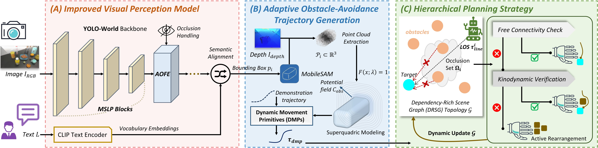
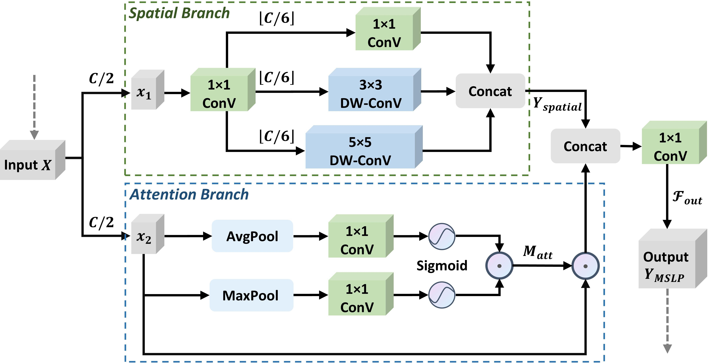
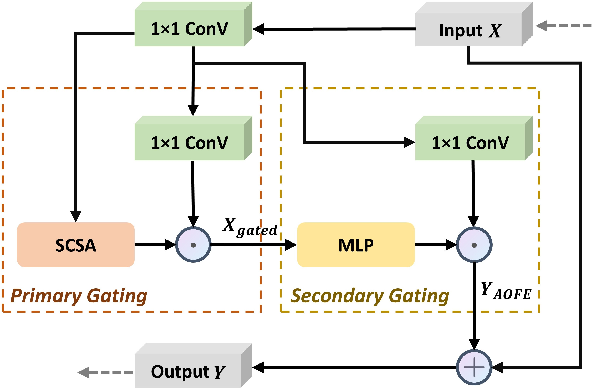
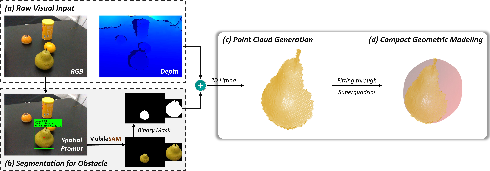
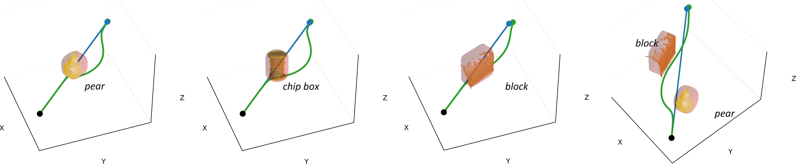
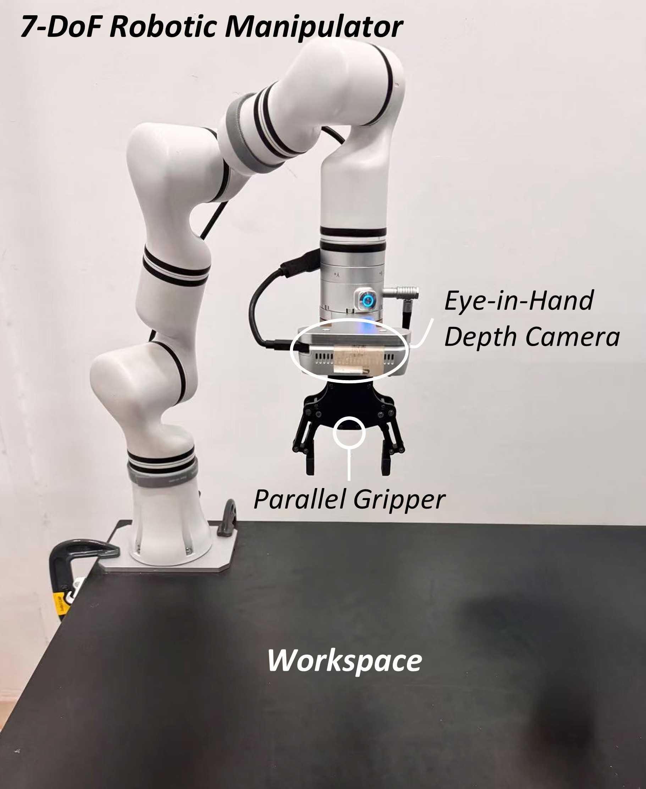
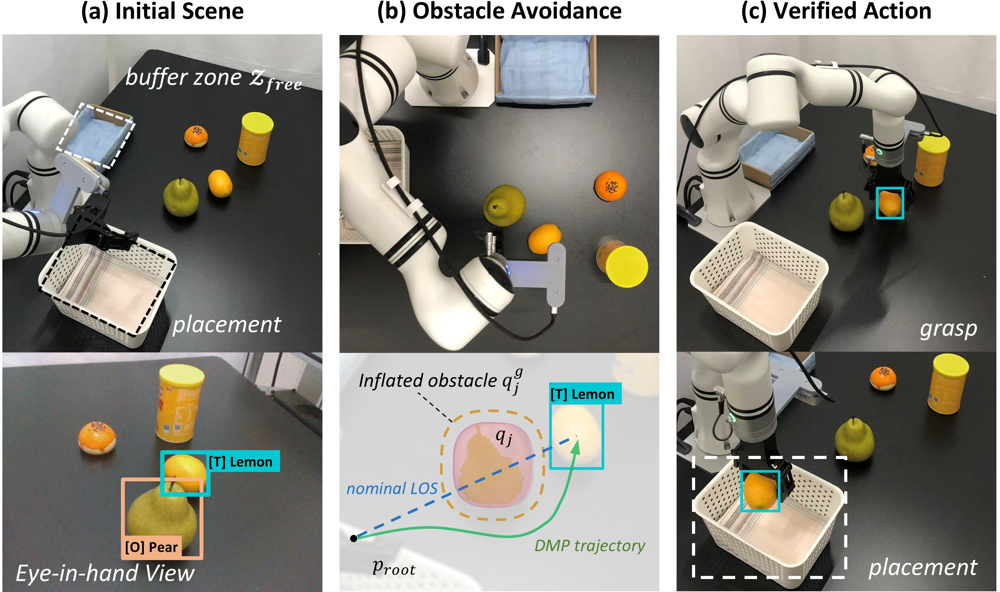

Robotic manipulation in unstructured environments faces significant challenges, particularly under limited conditions such as varying illumination, occlusions, and restricted computational resources.
Traditional approaches often struggle to balance robust semantic perception with efficient task planning, especially when the target is physically unreachable due to possible obstacles, requiring active rearrangement.
To address the above issues, this paper proposes SHARP, a Semantic-aware Hierarchical Active Rearrangement Planning framework that couples robust visual perception with physics-aware task planning for a fixed-base manipulator using eye-in-hand observations.
First, we architecturally reconstruct YOLO-World by optimizing the network for enhanced multi-scale perception and improved occlusion robustness.
This design effectively reduces the model size without compromising detection performance.
Second, we combine Dynamic Movement Primitives (DMPs) with superquadric potential fields for obstacle modeling to generate adaptive, collision-free trajectories.
Thirdly, a Dependency-Rich Scene Graph (DRSG) is constructed, which maps geometric occlusion relationships into topological connectivity based on physical reachability.
Utilizing the DRSG, the hierarchical planner dynamically switches between collision avoidance and active rearrangement for efficient action sequencing.
Comprehensive evaluations are conducted to validate the proposed framework, SHARP.
Specifically, ablation tests verify the efficacy of the modified perception modules, while geometric analysis and quantitative comparisons validate the adaptive obstacle-avoidance trajectory generation.
Furthermore, extensive real-world experiments demonstrate SHARP's effectiveness and robustness in complex obstacle-aware manipulation tasks.
Main Contribution
We propose SHARP, a semantic-aware hierarchical planning framework that couples lightweight visual perception with scene reachability analysis for obstacle-aware manipulation from limited eye-in-hand observations. The main contributions of our work are summarized as follows:
We propose an architecturally optimized visual perception model based on YOLO-World, integrating a multi-scale lightweight perception (MSLP) block and an anti-occlusion feature enhancement (AOFE) module to reduce model complexity while preserving high detection accuracy.
We develop an adaptive trajectory generation method that combines superquadric-based potential fields with dynamic movement primitives (DMPs), generating collision-free grasping motions adapted to the estimated obstacle geometry.
We introduce a dependency-rich scene graph (DRSG) that couples semantic task dependencies with motion feasibility to coordinate target grasping, obstacle avoidance, and active rearrangement while reducing unnecessary relocations.
We evaluate the framework through detector comparisons, module ablations, quantitative trajectory tests, and real-world experiments against heuristic baselines and PDDLStream-Adaptive.
Here we show a brief overview of the proposed Semantic-aware Hierarchical Active Rearrangement Planning framework:

Methodology and Evaluation
We architecturally reconstruct the visual perception network with MSLP and AOFE to reduce parameter redundancy and enhance robustness against cluttered contexts. MSLP combines multi-scale spatial encoding with channel attention, while AOFE refines high-level detection features through two-stage multiplicative interactions and a residual connection.

The Multi-Scale Lightweight Perception Block

The Anti-Occlusion Feature Enhancement Module
We evaluate the perception model on a custom dataset of 14 household object classes, collected with variations in illumination, viewpoint, and inter-object occlusion. Detector comparisons and module ablations assess detection accuracy and computational efficiency on the collected test set.
Our detector achieves 96.7% mAP50 with 3.61 M parameters and 8.5 GFLOPs on the collected test set. Combining MSLP and AOFE improves detection accuracy while reducing the model's computational cost.
Adaptive obstacle-avoidance trajectories are generated by DMPs with potential fields constructed over compact superquadric models. Object masks and refined depth are used to reconstruct point clouds, which are fitted with superquadrics under a symmetry assumption.

The same DMP weights, learned from one obstacle-free grasping demonstration, are reused across the obstacle configurations below. The unmodulated reference trajectories are shown in blue, and the adapted obstacle-avoidance trajectories in green.

Comparisons with APF and RRTConnect evaluate clearance, smoothness, path length, and computation time on 40 common planning instances. Our method produces smoother, shorter trajectories with greater gripper clearance, at a mean computation time of 8.6 ms.
The DRSG represents candidate blocking relations together with each object’s semantic task role. The hierarchical planner prioritizes a blocker that is also a requested target, verifies obstacle-avoidance trajectories, and selectively relocates non-target blockers when needed. Candidate motions undergo whole-arm feasibility checks before execution, and the graph is reconstructed from new eye-in-hand observations after each manipulation. See the experimental video.
Real-World Experiments
The physical platform uses a fixed-base 7-DoF manipulator with a parallel gripper and an eye-in-hand RealSense D435i RGB-D camera. Computation runs on the workstation equipped with an NVIDIA RTX 3080 Ti GPU.

We evaluate SHARP in four task scenarios: Level 1 (Sparse), Level 2 (Avoidable Occlusion), Level 3 (Physical Deadlock), and Level 4 (Semantic Conflict).
The following sequence shows the robot navigating around a pear to grasp a target lemon and place it in the basket. The schematic overlay illustrates the fitted obstacle, gripper-clearance margin, and DMP trajectory used for obstacle avoidance.

Obstacle-Avoidance Grasping with Gripper Clearance
Further task executions across different levels are shown in the videos below.
Level 2 (Avoidable Occlusion)
Level 3 (Physical Deadlock)
Level 4 (Semantic Conflict)
The baseline examples illustrate two limitations: avoidance alone can fail when access is blocked, while proximity-based rearrangement can relocate objects unnecessarily. SHARP uses semantic task roles and verified trajectories to select when rearrangement is needed.
!REDUNDANT rearrangement
×CANNOT bypass obstacle
×CANNOT bypass obstacle
Example Results Analysis
In this Level 4 (Semantic Conflict) task, the robot retrieves an egg yolk pastry and a croissant. SHARP relocates the blocking milk bottle, then grasps the croissant while avoiding the candy box. Retrieving the croissant satisfies one goal and clears access to the pastry. Baseline A cannot resolve the blocked access, while Baseline B unnecessarily relocates the candy box.